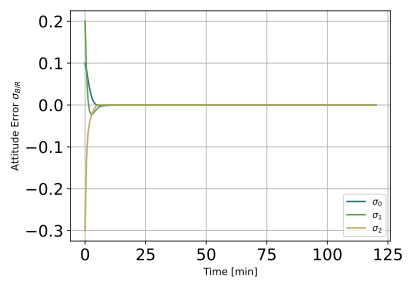
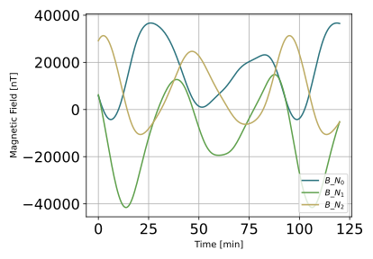
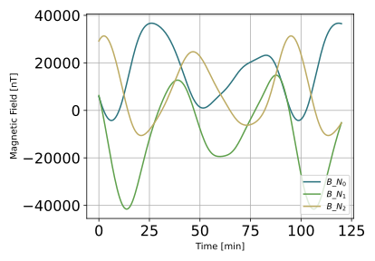
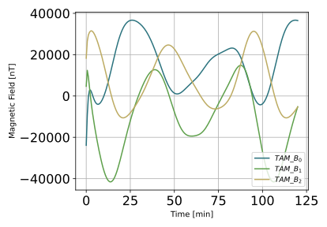
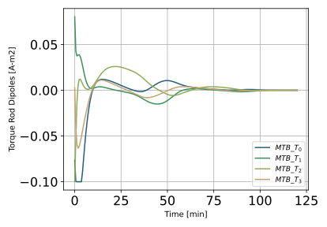

scenarioMtbMomentumManagement¶
Overview¶
Demonstrates how to use magnetic torque bars to drive the angular momentum of RWs to desired values. The basic spacecraft setup with RWs is similar to that seen in scenarioAttitudeFeedbackRW. A magnetic field is simulated, and a three-axis magnetometer (TAM) sensor device is added. Three orthogonally aligned magnetic torque bars (MTBs) (see Module: MtbEffector) are included to provide a magnetic torque. Finally, the RW angular momentum management module using MTBs, called Module: mtbMomentumManagement, is used to drive the RW spin rates to desired values. The spacecraft is setup to stabilize and point in a fixed inertial direction while this RW momentum control is engaged.
The script is found in the folder basilisk/examples and executed by using:
python3 scenarioMtbMomentumManagement.py
- The RW momentum dumping strategy is taking from the paper
entitled Three-Axis Attitude Control Using Redundant Reaction Wheels with Continuous Momentum Dumping and authored by Erik Hogan.
Illustration of Simulation Results¶
show_plots = True
The first plot illustrates that the Module: inertial3D module is able to achieve a stable inertial pointing.
The next plots illustrate the RW states. The motor torque are initially large to stabilize the spacecraft orientation. After this they return to small values that are compensating for the magnetic momentum dumping. The RW spin rates converge to the desired values over time.
 
The following plots illustrate the sensed magnetic field as well as the TAM commanded dipoles.
- scenarioMtbMomentumManagement.plot_attitude_error(timeData, dataSigmaBR)[source]¶
Plot the attitude errors.
- scenarioMtbMomentumManagement.plot_data_mtb_momentum_management(timeData, dataMtbMomentumManegement, numMTB)[source]¶
Plot the magnetic field.
- scenarioMtbMomentumManagement.plot_data_rw_motor_torque_desired(dataUsReq, tauRequested_W, numRW)[source]¶
Plot the RW desired motor torques.
- scenarioMtbMomentumManagement.plot_data_tam_comm(timeData, dataTamComm)[source]¶
Plot the magnetic field.
- scenarioMtbMomentumManagement.plot_magnetic_field(timeData, dataMagField)[source]¶
Plot the magnetic field.
- scenarioMtbMomentumManagement.plot_rate_error(timeData, dataOmegaBR)[source]¶
Plot the body angular velocity rate tracking errors.
- scenarioMtbMomentumManagement.plot_rw_cmd_torque(timeData, dataUsReq, numRW)[source]¶
Plot the RW command torques.
- scenarioMtbMomentumManagement.plot_rw_motor_torque(timeData, dataUsReq, dataRW, numRW)[source]¶
Plot the RW actual motor torques.
- scenarioMtbMomentumManagement.plot_rw_speeds(timeData, dataOmegaRW, numRW)[source]¶
Plot the RW spin rates.
- scenarioMtbMomentumManagement.run(show_plots)[source]¶
The scenarios can be run with the followings setups parameters:
- Parameters
show_plots (bool) – Determines if the script should display plots
useJitterSimple (bool) – Specify if the RW simple jitter model should be included
useRWVoltageIO (bool) – Specify if the RW voltage interface should be simulated.